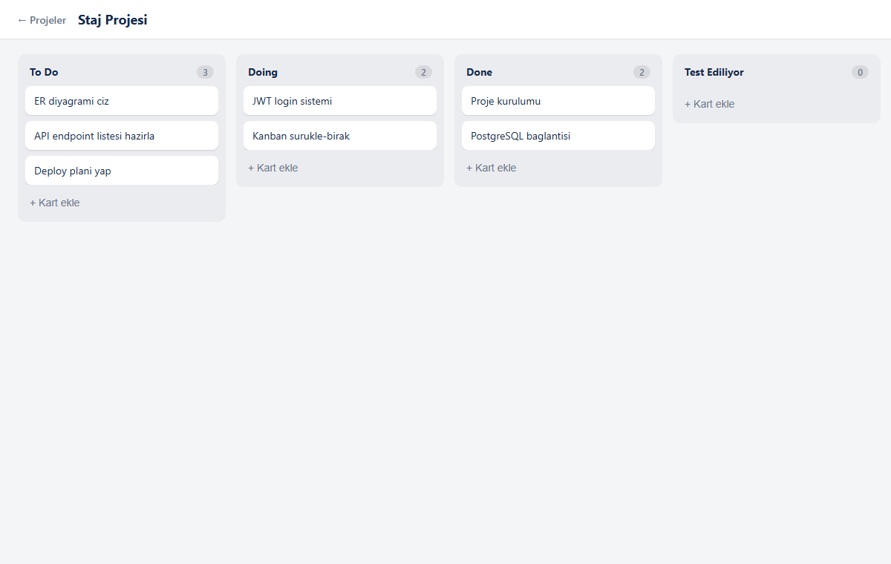
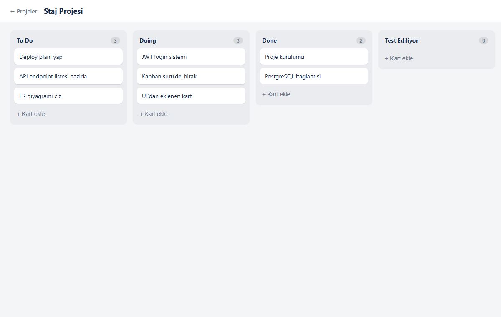
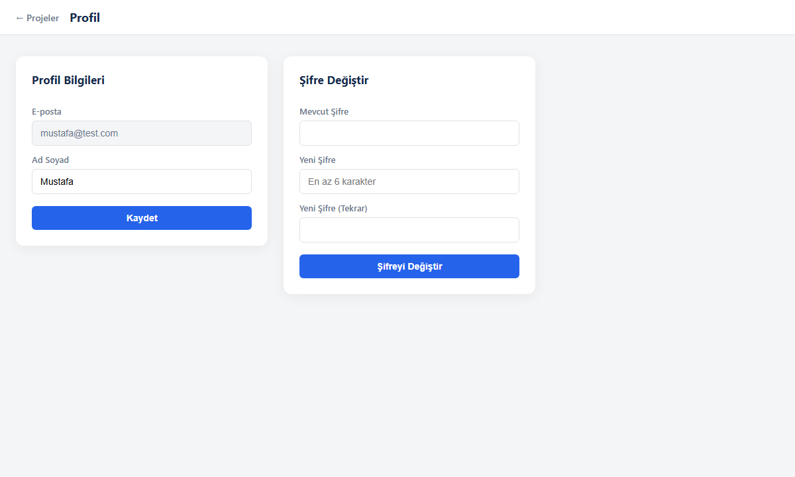
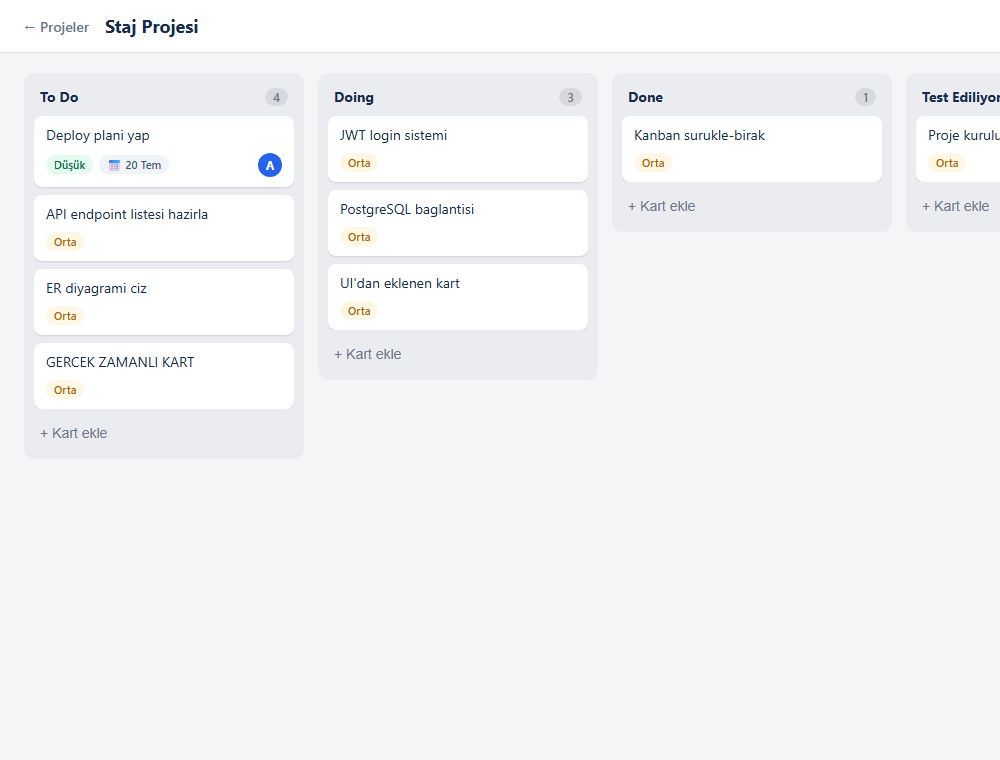

Şifreler günümüz güvenlik standartlarında düz metin saklanmaz; tek yönlü hash
(bcrypt) kullanılır. Oturum yönetiminde sunucuda durum tutmayan (stateless) JWT
modern web mimarilerinde yaygındır.
Modern frontend'ler bileşen (component) tabanlıdır ve tek sayfa uygulaması (SPA)
olarak çalışır. Kullanıcı deneyimi için iyimser güncelleme (optimistic UI) kullanılır:
işlem sunucuya gitmeden arayüz anında güncellenir.
Kod Örneği — Sıralamayı Transaction ile Kaydetme
column.controller.js
await prisma.$transaction(
taskIds.map((taskId, index) =>
prisma.task.update({
where: { id: taskId },
data: { columnId, position: index }, // yeni sıra kalıcı kaydedilir
})
)
);
Ekran Görüntüsü — Kanban Panosu

Sütunlar ve kartlarla kanban panosu.
Ekran Görüntüsü — Sürükle-Bırak Sonrası

Kart bir sütundan diğerine taşındıktan sonraki durum.
Ekran Görüntüsü — Profil ve Şifre Değiştirme

Ad güncelleme ve şifre değiştirme ekranı.
Öğrenilenler
Kazanımlar.
React'te useState ve Context ile durum yönetimi kavrandı. Sürükle-bırakta sütunlar
arası taşıma ve verinin backend'de tutarlı kalması (transaction) öğrenildi. Frontend
ile backend'in CORS ve JWT üzerinden entegrasyonu görüldü.
Tarih
15 / 07 / 2026
Sayfa Numarası
3
Çalışılan Konu Başlık:Gelişmiş Görev Özellikleri (Öncelik, Son Tarih) ve Gerçek Zamanlı İşbirliği (WebSocket / Socket.io)
Yapılan İş
Görev veri modeli genişletildi: öncelik (LOW / MEDIUM / HIGH) ve son tarih alanları eklendi, Prisma migration ile uygulandı.
Karta tıklayınca açılan görev detay modalı yapıldı: başlık, açıklama, öncelik, son tarih ve atanan kişi düzenlenebiliyor.
Kanban kartlarına rozetler eklendi: öncelik rengi, son tarih ve atanan kişinin baş harfi (avatar).
Socket.io ile gerçek zamanlı işbirliği eklendi: bir kullanıcının yaptığı değişiklik, aynı projedeki diğer kullanıcılara sayfa yenilemeden anında yansıyor.
Backend'de her görev/sütun değişikliğinde ilgili proje "odasına" WebSocket olayı yayınlandı (event-driven mimari).
Gerçek zamanlı iletişim (WebSocket) ve event-driven mimari.
HTTP'nin aksine WebSocket çift yönlü ve sürekli bir bağlantı kurar; sunucu istemciye
kendiliğinden veri "itebilir" (server push). Olay tabanlı (event-driven) mimaride her
değişiklik bir olay olarak yayınlanır. "Oda (room)" kavramıyla bildirim yalnızca ilgili
projedeki kullanıcılara gider — bu, ölçeklenebilir bir yaklaşımdır.
Kod Örneği — Sunucudan Anlık Bildirim (Socket.io)
realtime.js — backend
// Değişikliki yalnızca ilgili projenin odasına yayınla
io.to(`project:${projectId}`).emit("board:updated", { projectId });
Açıklama, öncelik, son tarih ve atanan kişi düzenleme; kartlarda renkli rozetler.
Ekran Görüntüsü — Gerçek Zamanlı Güncelleme

İkinci kullanıcının ekranı: diğer kullanıcının eklediği kart, sayfa yenilenmeden otomatik belirdi.
Öğrenilenler
Kazanımlar.
WebSocket ile gerçek zamanlı iletişim mantığı öğrenildi. Veri modeline yeni alan
eklerken migration süreci uygulandı. Event-driven mimari ve "oda (room)" kavramıyla
yalnızca ilgili kullanıcılara bildirim gönderen ölçeklenebilir bir yapı kuruldu.